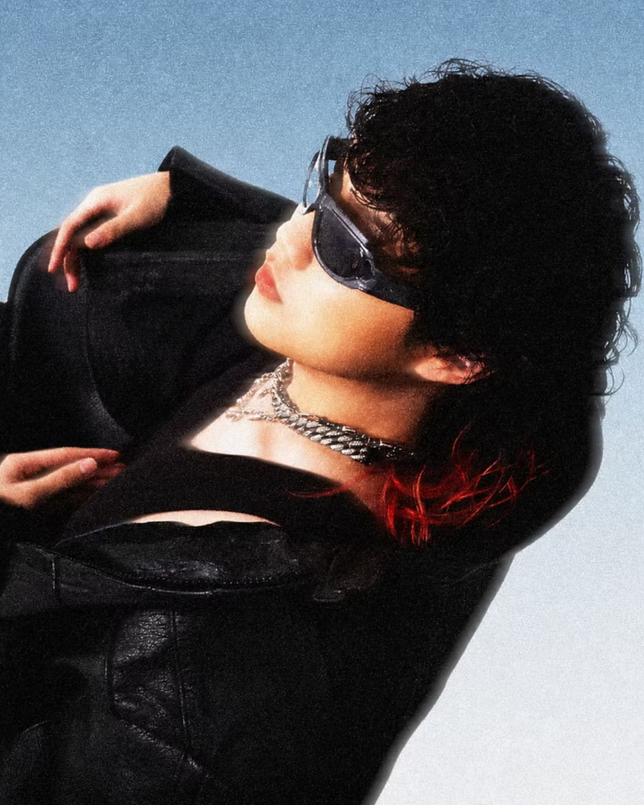
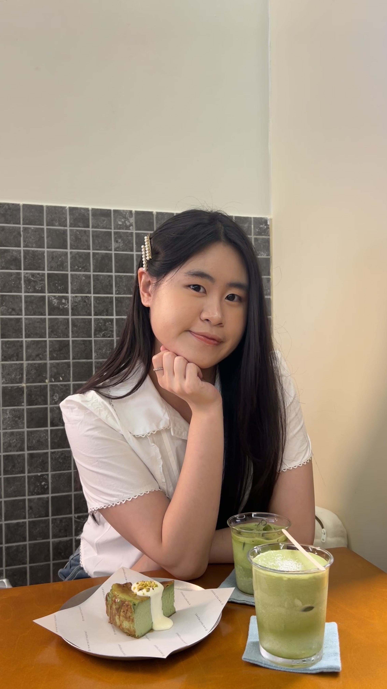

自《中國有嘻哈》播出之後，受節目鼓舞而開始創作的音樂人不計其數。馬來西亞華語圈的嘻哈生態也因此迎來蓬勃發展，更有甚者衝出國界登上國際舞臺。sunOceanus（簡稱 sun），作為馬來西亞嘻哈新生代表，今年也不負眾望地闖進《大嘻哈時代 3》的海選晉級名單。
本期人物採訪將分為上下兩期，從 sun 的成長經歷一路聊到他創立馬來西亞首個嘻哈研究社的心路歷程。
sun 的音樂天賦可以說是與生俱來的。不僅家中長輩都是活躍於歌臺的唱將，sun 更是從母親懷胎時就開始接受音樂熏陶了。


升上小學後，開始活躍於校內歌唱比賽的 sun，在選曲上特立獨行的作風也奠定他日後的演繹風格。在同儕都在唱周杰倫的<聽媽媽的話>、<青花瓷>等風格輕快的作品時，他總想唱些酷的。
sun：我都唱周杰倫<夜的第七章>這種比較快、比較陰暗的歌，聽起來就比較帥。我覺得這可能是每個 Hip-hop 人小時候都有的一種特質。
Q：當初是怎麼開始接觸嘻哈創作呢？
sun：我小時候就是一個活寶嘛，調皮搗蛋話也很多。看了《中國有嘻哈》後，我接觸到了 Jony J，也因此認識到原來歌曲可以涵蓋那麼多訊息，所以我也開始試著把話都放到歌裡。加上寫作對我來說本就不是一件難事，創作也就變成了一件很自然的事。
走過的每一步都作數
求學時的寫作訓練形塑了 sun 扎實的文筆功底。擅長書寫議論文的他，對自己的作品結構也有著清晰的認知。仔細觀察 sun 的歌詞不難發現，sun 對語序結構上的嚴謹，以及對用詞、韻脚近乎偏執的講究，都清晰可見。
sun：我不想寫太速食的作品，我希望大家看待我的作品會像享用甲殼類海鮮一樣，要耐心剖開外層才可以品嘗到精華。因此我也會更注重作品的整體性，至少整張 EP 聽下來要是順的，不會覺得哪首特別突兀，這也是我近期最大的轉變。
撇開技術層面的討論，以前的創作單純是從個人喜好出發，但現在會更側重於創作的動機和脈絡。像是去年發行的《APOLLP : AGAINST THE WORLD》，便更注重作品背後的故事。整張專輯以倒敘的方式進行敘事，因此對歌詞也會非常挑剔。但這次在《TIDAL》中，嘗試的是讓音樂先服務於聽感，也練習放下了很多對歌詞的偏執。
Q：你覺得現在的環境，對剛開始做 Hip-hop 的學生／年輕創作者來說，與你當初開始創作時有什麼不同？他們一般會面對怎樣的挑戰？
sun：我覺得，相較於其他音樂創作形式，嘻哈的入門門檻相對較低。加上 Type Beat 的選擇也越來越多，資源肯定是相對更好的。但依賴 Type Beat 也有缺點，就是 rapper 的表現力會受到限制。所以我覺得，新手面臨的挑戰更多在於如何找到適合的製作人，以突破自身的局限。
馬來西亞現在的嘻哈環境我覺得對新人來說是相對友善的，至少大家都蠻樂意提攜後輩。我覺得大家都蠻有才華的，所以我是不介意和別人分享我擁有的資源、關係、人脈等等的，也很歡迎大家來我們的工作室一起玩。

Q：Unbarred 已正式結業了，那 sunOceanus 之後有什麼想達成的目標呢？
sun：肯定有很多想達成的目標，比如專輯等等。但我有個宏願，就是想要跳脫本土創作的框架，回到嘻哈音樂本身。我覺得馬來西亞目前的嘻哈創作題材有些固化了，這對於整個創作生態來說不是很健康。
我希望可以透過之後的創作，讓馬來西亞的嘻哈面向更多元一點。不只是局限於「本土化」、「本地口音」這個維度，而是回歸到嘻哈就是酷、就是帥這件事本身，做出更國際化、更好看的東西。
<結>
sun 不僅自身條件突出，也心系群體發展。從個人創作到帶領社員成長，他對馬來西亞嘻哈生態的思考，也體現在創立 Unbarred 的初衷與經營歷程之中。
下期將把焦點從 sun 的個人創作轉向他所建立的嘻研社，深入了解 Unbarred 從創立、發展到最後決定閉社的歷程，以及這段經歷為馬來西亞學生嘻哈文化留下了什麼。